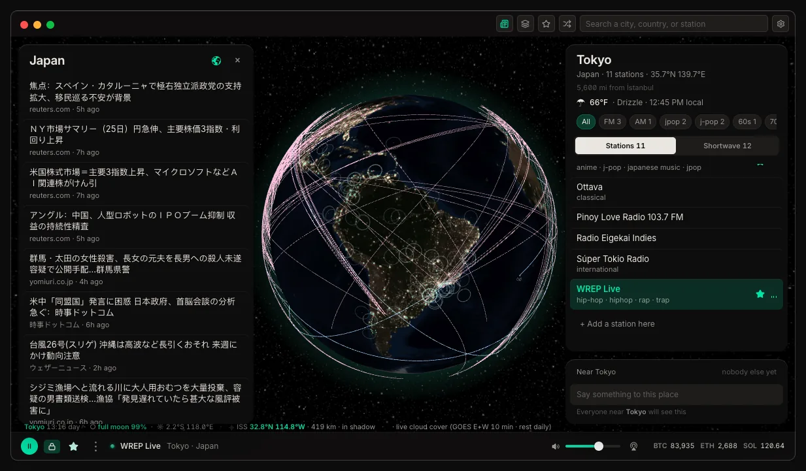
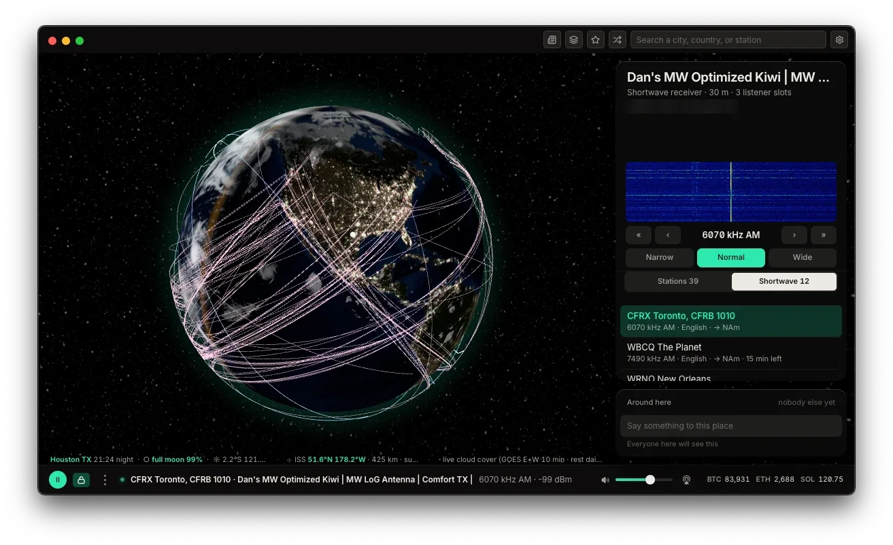
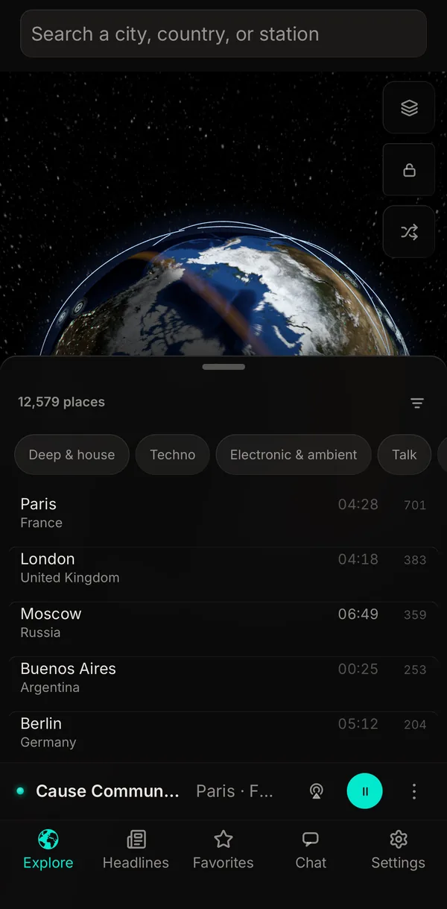

01
Spin
Drag the globe anywhere. Whatever sits under the middle becomes the selection, and the list beside it follows.
[ How to use AuralFM ]
How to get the most out of the globe. This is new, and more is on the way.
It is in Safari’s ••• menu.
Scroll down to find it.
Turn it on.
AuralFM now opens from your Home Screen, full screen, like any other app. See the steps in the app
[ Finding stations ]
01
Drag the globe anywhere. Whatever sits under the middle becomes the selection, and the list beside it follows.
02
Every lit dot is a place with stations. Tap it and the place opens: its stations, its weather, the time there.
03
A city, a country or a station name. Words combine, so jazz new orleans finds jazz stations in New Orleans. It searches on your device, with nothing sent anywhere.
04
Order the places by most stations, hidden gems (a new handful each day, the same all day), what is near you, who is awake right now, or at random.
05
The shuffle button plays one station from anywhere on Earth. Every one of the 62,043 is as likely as the next: nothing is weighted, nothing is pushed.
06
Tap the star beside a station to keep it. Favorites stay on your device; on the desktop they are in the menu bar too.
[ Vibes ]
Open Explore and pick a vibe under the places heading: deep & house, techno, electronic & ambient, talk, old-time radio, faith, jazz, cumbia & tropical, reggae & dub, community. The list becomes the places that play it, most of it first, and every one of them lights up on the globe.
A vibe is the tags stations give themselves, grouped and named by people. Nobody ranks the stations inside it and nobody pays to be there. Tap the vibe again to see every place.
Every station in every vibe is also listed on the site, by place, with a filter: auralfm.xyz/vibes.
[ Headlines ]
Open the headlines and you see the news from the country your station broadcasts from, in that country’s own language, from Google News for that country. Switch to world headlines for the BBC, Al Jazeera, France 24 and DW.
Choose a world headline and it opens in a reader inside the app: the article’s text, without the page around it. A country headline opens where it was published.
In the desktop app every request goes straight from your computer to the newsroom. In the web version a browser is not allowed to fetch another site’s feed, so headlines pass through the host that serves the web app. Nothing about them is kept.

[ Chat ]
Each place has a room. Open the chat and you are talking with people listening to, or looking at, the same part of the world. There is nothing to sign up for and no profile.
The chat is carried on Nostr, an open network of relays that no single company owns. AuralFM makes a new key each time it opens and throws it away when it closes, so nothing links one session to the next. Messages ask relays to pass them on and not store them; most do, and none can promise all do, so say nothing you need kept private.
You can add a relay of your own in Settings, and it is tried first. See something abusive? Report it from the message and it comes to us.
Listener presence is separate and off until you turn it on: while you play, it shares the station’s name and roughly where the station is (a 20 km square), never where you are.
[ Shortwave · desktop ]
The desktop app shows public shortwave receivers on the globe: KiwiSDRs that radio hobbyists run at their own expense and list openly for anyone to use. Pick one, tune a frequency, and hear what is crossing the ionosphere.
Each one is somebody’s own equipment, so AuralFM is a careful guest: it connects only when you click, to one receiver at a time, says who it is, never retries a receiver that said no, and gives the slot back ninety seconds after you pause.
Run a receiver and would rather not be listed? Email hello@auralfm.xyz with your host name and it is out of the next build.
[ Privacy ]
No account, no profile, no tracking, and no analytics in the app. Your favorites and settings stay on your device. Nothing learns what you like.
But radio is the open internet. The station you play, and the services that draw the globe (NASA’s imagery, the weather, the headlines), see your IP address the way any website you visit does. The website’s host counts page views. The privacy policy names every service and what it sees, and the terms are short.
[ Desktop and web ]
01
Free in any browser at listen.auralfm.xyz, and full screen from your iPhone’s home screen. Stations, vibes, headlines and chat.
02
Everything on the web, plus shortwave, stations you add yourself and a player in the menu bar. macOS now, Windows next, in private beta.
03
About half the most played streams are sent over plain http, which browsers block on a secure page. The web plays the secure ones and finds a secure copy where one exists; the desktop has no such limit.
04
The web app is built from the desktop app’s own code, so a fix in one is a fix in both.


[ How it was built ]
The stations come from public directories kept by people who love radio: radio.garden for places, and the community-run radio-browser database for genres and working streams. They are gathered into one catalogue that ships inside the app, which is why search and the globe work offline.
The globe is NASA’s Blue Marble with live cloud cover from weather satellites, the line between day and night where it truly falls, the ISS where it is right now, drawn with globe.gl.
The app is Electron on the desktop, and the same code built into a web page for browsers and iPhones. When you press play, your device goes straight to the station: nothing re-streams the audio or puts an ad in front of it.
The chat rides open Nostr relays. The checks: every bug fixed gets a test written after it, and each one is seen to fail before it is trusted.
[ When a station will not play ]
01
Stations go off air, move their streams or block other countries. AuralFM tries the next station in the same place on its own; tap another if it does not.
02
It may be an http stream that browsers block. The desktop app can play it.
03
Check the volume and that AirPods or a speaker are not still connected somewhere else. The output button picks where the sound goes.
04
Tell us which station and where: hello@auralfm.xyz.